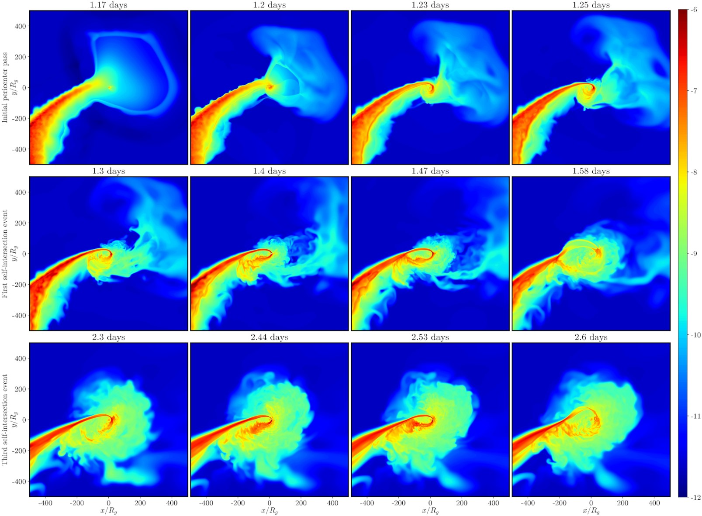
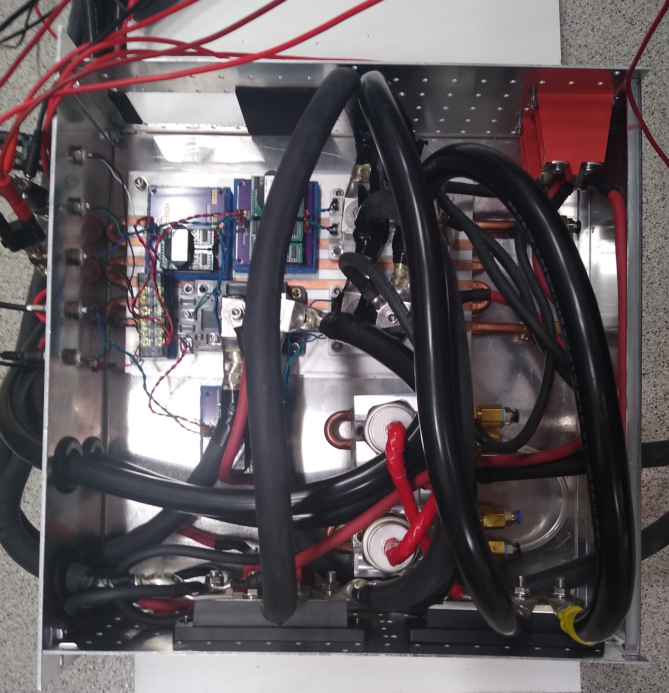
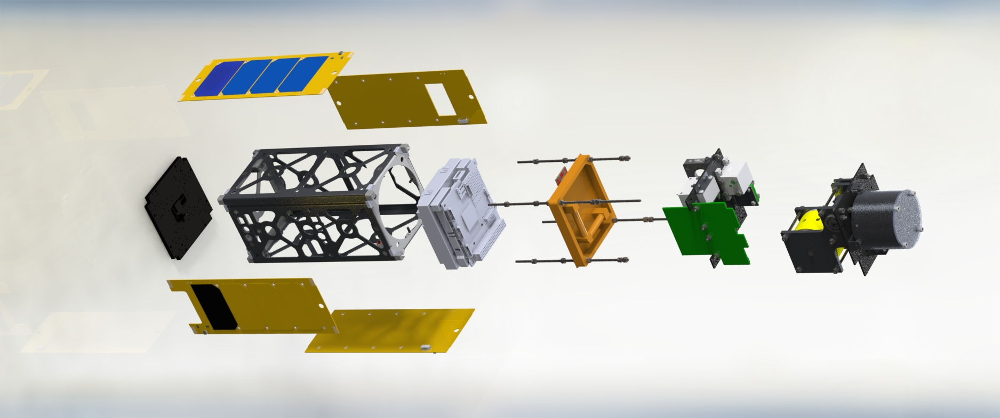
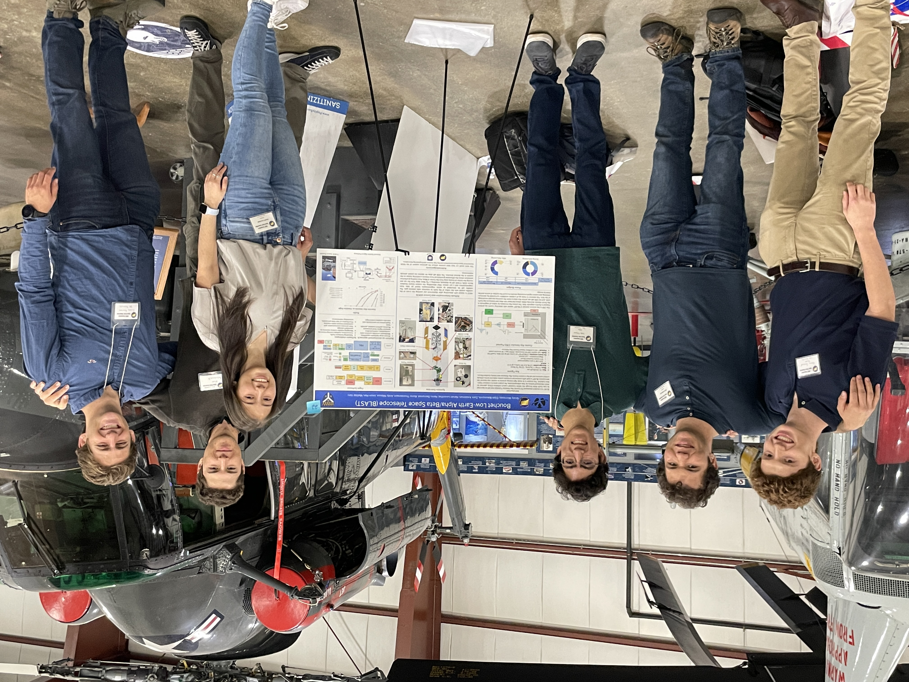
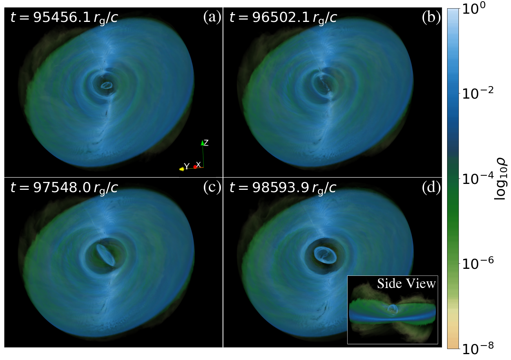

In progress!
In progress!
What is a Tidal Disruption Event?
When a star passes too close to a supermassive black hole (BH), the BH’s tidal forces pull the star apart into a stream of debris in a so-called tidal disruption event (TDE).
Some of the stellar debris is gravitationally bound to the BH and accretes at rates far above the Eddington limit, resulting in a bright flare and the formation of a “debris disk” on a timescale of weeks to months.
Although TDEs are relatively rare, with a rate of one per 1,000 to 10,000 years per galaxy, they have a broad astrophysical implications.
-
Only ~30% of galaxies host active galactic nuclei (AGN).
TDEs provide a rare glimpse of the central BHs of the quiescent majority of galaxies, allowing astronomers to better understand the fueling modes for supermassive BHs and their growth mechanisms and evolution.
-
TDEs also offer a clean laboratory for studying accretion physics because the accretion rate is set by only a handful of orbital and stellar structure parameters.
The accretion rate sweeps through multiple accretion regimes, from super- to sub-Eddington, on relatively short timescales.
-
The properties of TDE flares depend on the properties of the disrupted star.
Therefore, TDEs probe the stellar populations and kinematics of the galactic centers where the majority of events are produced.
Energy Dissipation in TDEs
Working with Prof. Sasha Tchekhovskoy, Prof. Eric Coughlin, and Prof. Nicholas Stone, I use the smooth particle hydrodynamics (SPH) code PHANTOM and the general relativistic hydrodynamics (GRHD) code H-AMR, developed by Matthew Liska, to simulate deeply-penetrating tidal disruption events and the resulting debris disks.
In my first published work, I analyze these simulations to understand the physical processes that drive the circularization of the stellar debris.
I find that circularization of the most bound debris is dominated by periodic self-intersections caused by general relativistic precession and that circularization at later times is dominated by hydrodynamic instabilities at the debris-disk interface.

from Andalman+2022
Current and Future Work
I am currently working on new TDE simulations which incorporate magnetic fields to investigate the role of the magnetorotational instability (MRI) in driving circularization.
These simulations will also test the fossil disk hypothesis, which states that TDEs pick up the requisite magnetic flux to power a jet from a pre-existing accretion disk.
The new simulations will cover longer timescales than previous simulations, allowing me to probe the physics of the debris disk near the time of peak fallback.
I am also working on applying analytical models to my simulation data to understand how information about the debris disk geometry and viewing angle is encoded in TDE spectra.
Publications
- Andalman, Z. L.; Liska, M. T. P.; Tchekhovskoy, A.; Coughlin, E. R.; Stone, N. Tidal Disruption Discs Formed and Fed by Stream-stream and Stream-disc Interactions in Global GRHD Simulations, 2022, Monthly Notices of the Royal Astronomical Society, Volume 510, Issue 2, pp. 1627-1648, arXiv:2008.04922
What are Optical Tweezer Arrays?
Optical tweezers are micrometer-sized optical traps obtained by tightly focusing a laser beam.
Optical techniques can diffract the beam into many spots, making it possible to form arrays of atoms in a variety of geometries.
In such an array, the interactions between atoms can be controlled by inducing quantum tunneling between array sites or by placing atoms into high-energy Rydberg states.
This property makes them great analog quantum simulators (AQS).
The quantum many-body problem encompasses a vast range of physical problems from Bose-Einstein condensation to the quark-gluon plasma of the early universe.
However, most quantum many-body systems are difficult to study directly and too complex to model on classical computers.
An AQS uses a controllable quantum system to mimic a less experimentally feasible one via a direct mapping from the Hamiltonian of the simulator to the Hamiltonian of the system.
By engineering the interactions of the simulator to closely match those of the system of interest, we can study the system indirectly.
Magneto-Optical Trap Control Box
As part of Prof. Nir Navon's Ultracold Quantum Matter Lab, I worked on an apparatus capable of cooling bosonic Sr down to nano-Kelvin temperatures so that it could be captured by optical tweezers.
My key contribution was the design and construction of a control box for the electromagnetic coils of a magneto-optical trap (MOT).
The MOT consists of a set of counter-propagating lasers oriented along orthogonal axes and tuned to a frequency just below the transition frequency of the atom.
Due to the Doppler effect, only atoms moving towards one of the laser beams will see photons at the correct frequency to absorb them.
Many cycles of photon absorption and reemission tend to slow down atoms in the direction of the original photon velocity.
This results in an effective damping force proportional and opposite to the atom’s velocity.
The MOT also includes a quadrupole magnetic field generated by coils in an anti-Helmholtz configuration.
This causes a Zeeman shift in the transition frequency which increases with the atom’s displacement from the center of the MOT.
As an atom’s displacement increases, it has a lower threshold for transition, so it is more likely to absorb a photon.
This results in an effective restoring force proportional and opposite to the atom's displacement.
The combination of the restoring and damping forces results in a damped oscillator potential for a cloud of atoms which eventually brings all atoms to the center of the MOT at an ultracold temperature.
The MOT coils must also be able to switch to a Helmholtz configuration to generate a near constant magnetic field of magnitude greater than 700 G to allow the usually forbidden S - P clock transition in Strontium.
The transition between Helmholtz and anti-Helmholtz configurations must occur in less than a millisecond to avoid unnecessary atom loss.
My control box switches between these configurations rapidly using insulated gate bipolar transistors (IGBTs) to operate a fast-switching H-bridge drawing up to 300 Amps.
The control box also includes a water cooling system, a temperature interlock, and a custom printed circuit board for running the control box from a digital display.

Other Projects
During my time in AMO physics, I worked on several other projects, including the development of a new user interface for the parametric experimental control software Artiq, the application of convolution neural networks to the fast sorting of atom arrays via the assignment problem, the deployment of a network of sensors to monitor ambient lab conditions and log the data to an online database, and the alignment and testing of a double-pass acousto-optic modulator (AOM).
Yale Undergraduate Aerospace Association
Yale Undergraduate Aerospace Association (YUAA) is Yale's largest undergraduate engineering organization, with more than 80 members and several concurrent aerospace projects.
During my time at Yale, I worked on several projects with YUAA, eventually serving as co-president of the organization during my senior year in the 2022-23 academic year.
Through my time at YUAA, I learned how to manage people and push an organization to develop in alignment with shared values, for example, by engaging with the broader Yale and New Haven communities.
BLAST CubeSat
In 2018, YUAA received a grant from NASA's CubeSat Launch Initiative (CSLI) to develop the Bouchet Low Earth Alpha-Beta Space Telescope (BLAST), a 2U CubeSat with a cosmic ray detector payload, to be launched into Low Earth Orbit (LEO).
BLAST's main science objective is to detect high energy protons and map the changing morphology of the South Atlantic Anamoly (SAA), a region where the Earth's lower Van Allen Belt crosses LEO resulting in increased magnetic and charged particle fluxes.
The SAA impacts satellites by interfering with astronomical observations and producing memory errors through bit flips.
BLAST includes multiple interacting subsystems, including a gravity gradient boom and magnotorquers for attitude determination and control.

During my junior and senior years at Yale, I lead the design of the cosmic ray detector (CRD) payload.
The CRD consists of a plastic scintillator and a Silicon photomultiplier (SiPM).
The signal from the SiPM is processed by several amplification stages and our own multi-channel analyzer before count data is fed back to the on-board computer.
The project was funded in part by the Connecticut Space Grant Consortium and we presented our progress at a poster presentation at the Connecticut Space Grant expo.

Other Projects
During my time with YUAA, I worked on several smaller projects.
-
I worked on a team designing the rover payload for a rocket, to be flown at the Intercollegiate Rocket Engineering Competition (IREC).
I developed an Arduino-based system to allow the rover to receive commands and stream video footage over the internet.
-
I lead a small team designing and constructing an ornithopter, or robotic bird, capable of self-correcting flight.
The ornithopter used high-torque servos to flap wings made of carbon fiber rods and kite fabric.
By applying different offsets to the flapping cycle of the wings, we independently controlled roll, pitch, and yaw.
The ornithopter included a custom printed circuit board which monitored acceleration and magnetic fields to calibrate steering and apply real-time corrections to its flight.
The project was funded by the Connecticut Space Grant Consortium and culminated in a poster presentation at the Connecticut Space Grant expo.
Community Outreach
I lead several outreach efforts through YUAA.
-
I designed a challenge for the Governor’s Summer STEM Challenge in CT.
The challenge allowed middle school children to participate in a science-based competition during the COVID pandemic.
-
I lead a workshop on the principles of flight with New Haven public school children.
In the workshop, participants had the opportunity to build their own ornithopter while learning about fluid mechanics.
Thin Tilted Accretion Disks
Standard black hole (BH) accretion disk models assume azimuthal symmetry about the spin axis of the BH.
However, in general this is not the case, because the spin axis of the BH and the spin axis of the accretion disk may be misaligned.
When there is a misalignment, the BH exerts a Lense-Thirring torque on the accretion disk, causing the disk to precess.
The torque varies with the cube of the distance from the BH, resulting in a differential torque which can tear the disk apart.
In a work lead by graduate student Nick Kaaz of Northwestern University, we perform GRMHD simulates of misaligned accretion systems and find that disk-tearing is associated with unique accretion mechanisms.
First, we find that nozzle shocks form on opposite sides of the disk, dissipating energy and driving accretion.
Second, we find that angular momentum exchanges at the point where two disk planes collide create low angular-momentum streamers which fall radially towards the BH.
I used my experience with tidal disruption events to help quantify the relative importance of these dissipation mechanisms.

from Kaaz+2023
Publications
- Kaaz, N.; Liska, M. T. P.; Jacquemin-Ide, J.; Musoke, G.; West, A.; Andalman, Z. L.; Tchekhovskoy, A.; Oliver, P.; Nozzle Shocks, Disk Tearing and Streamers Drive Rapid Accretion in 3D GRMHD Simulations of Warped Thin Disks, accepted for publication to The Astrophysical Journal in 06/2023, arxiv:2210.10053